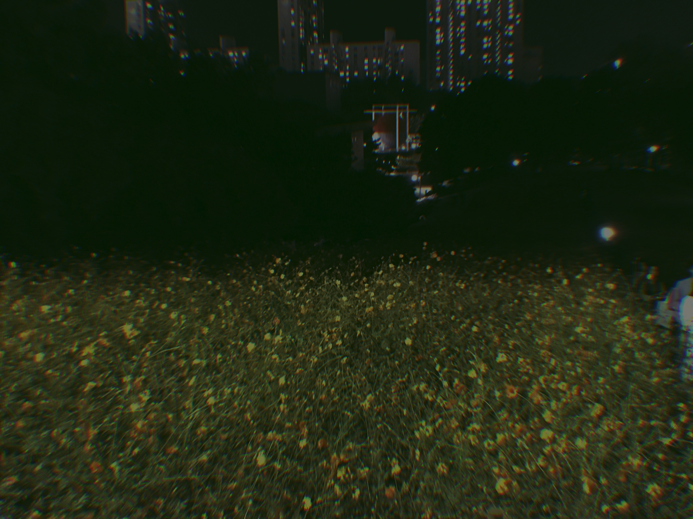
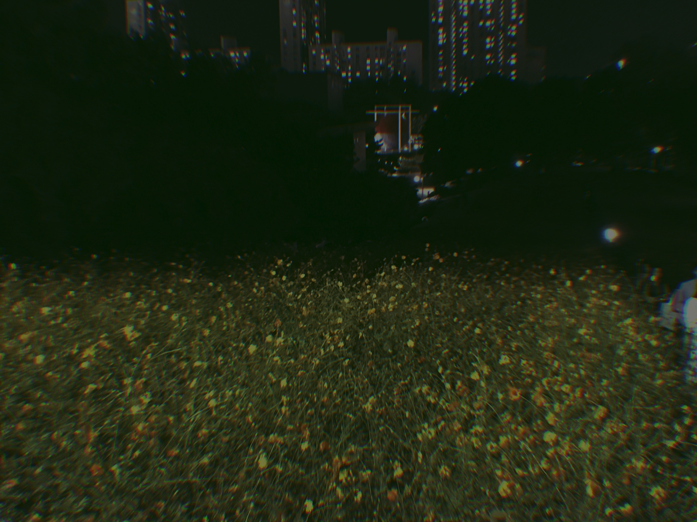
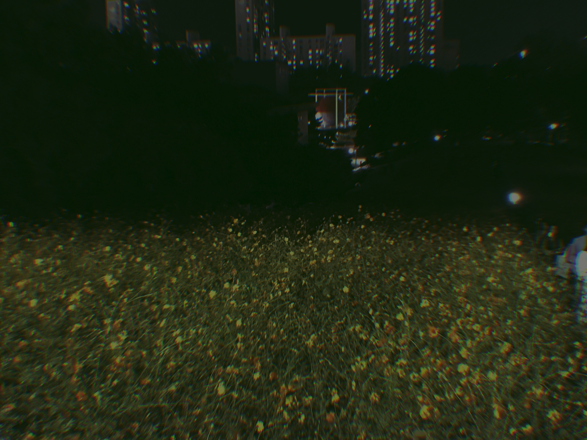

일본
여름에 놀러갔던 나가사키


옷
필름에 담은 여러가지 옷들

 

자연
나무, 꽃, 풀들


여유
느리게 흘러가는 시간


한 때 유행했던 (지금도 사용하는 사람이 있겠지만) 스마트폰 전용 필름 카메라 'Gudak'앱을 사용해 찍었던 사진들 중, 내 마음에 드는 사진들을 나름의 카테고리로 묶어 콜라주해본다.
여름에 놀러갔던 나가사키
필름에 담은 여러가지 옷들

나무, 꽃, 풀들
느리게 흘러가는 시간